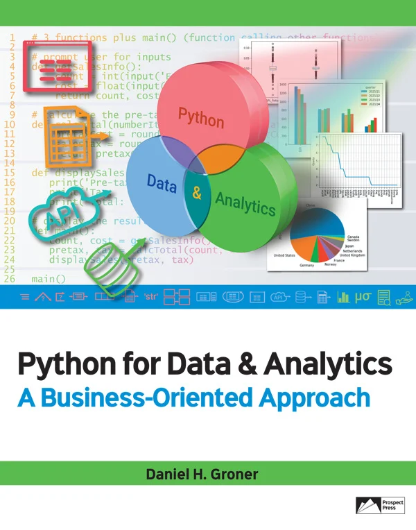

Code
Xplorer
TM

Chapter 2: Variables and Statements
Program 2-5: Calculate the total of two numbers
Program 2-6: Calculate BMI from height and weight
Chapter 3: Decisions
Program 3-6: Calculate ending balance of a 1-year CD (2 rates, if/else)
Program 3-8: Calculate ending balance of a 1-year CD (3 rates, if/elif/else)
Program 3-9: Calculate ending balance of a 1-year CD (new vs. existing customers; nested if)
Chapter 4: Repetition
Program 4-1: With while, generate a table of squares and cubes
Program 4-2: With while, cumulate a set of user-entered numbers
Program 4-3: With while, find the maximum of a set of user-entered numbers
Program 4-4: With while, generate BMIs for different weights
Program 4-6: With while, generate BMIs for different weights (special end value)
Program 4-8: With for, generate a table of squares and cubes
Chapter 5: Defining Functions
Program 5-1: Define and call a function to display a greeting
Program 5-2: Define and call a function with one input and one output
Program 5-3: Define and call a function with two inputs and one output
Program 5-4: Define and call a function with three inputs (one passed as a constant)
Program 5-5: Define and call a function with four inputs (including one named parameter)
Program 5-6: Define and call a function with two outputs
Chapter 6: Lists
Program 6-1: With lists, translate Air Quality Index (AQI) from number to color and concern (with for, break)
Program 6-1b: With lists, translate Air Quality Index (AQI) from number to color and concern (with while)
Program 6-2: Build a list with user-entered values, and calculate its average
Program 6-4: With for, determine the average of a list
Program 6-8: Determine the number of items below/above a value
Chapter 7: Reading & Writing Files
Program 7-1: Read one line from a file and display it to the screen
Program 7-2: With while, read a file and echo its lines to the screen
Program 7-3: With for, read a file and echo its lines to the screen
Program 7-4: With for, read a file of numbers and calculate and display their average
Program 7-7: Prompt for input and write a single line to a file
Chapter 8: Strings in Detail
Program 8-1: Simple text processor with assignment and concatenation
Chapter 9: Dictionaries and Sets
Program 9-1: Build a contact dictionary dynamically from user input
Program 9-2: Dictionary example to lookup phone (value) from email (key)
Program 9-3: Dictionary example to lookup phone (value) from email (key); handle not found
Program 9-4: Dictionary example to display all keys and values
Program 9-5: Contacts as a dictionary of dictionary records